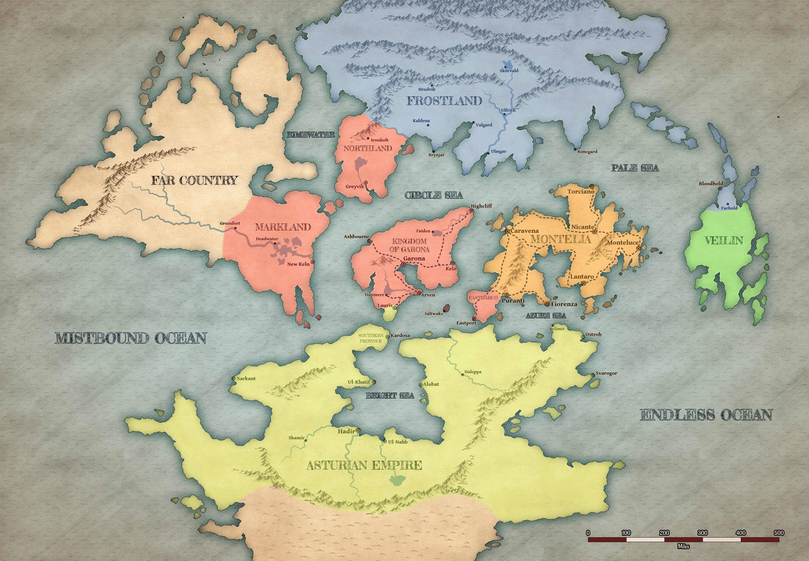

Хроніка кампанії. Тут немає нічого, чого ваші персонажі не знають.
Ваша хроніка
Від 2 до 9 Tarsakh 746 року.
День 12 Tarsakh 746
☀
Сесія 1
Біг по дахах і «купівля» інформації про обмінний дім.
пропонує партії пограбувати : вона підслухала розмову банди , які підкупили когось із дому заради ключа й плану. Героям обіцяно гроші.
Для розрахунку з бандою партія виготовила підроблені монети — і вони не знадобилися: ключ і план перехопили силою. Коли прибігла стража, героям повірили, а забрали.
🌙
Пограбування. Пролізли до сховища й знайшли там таємну кімнату : пляшки з кровʼю, лист від батька () і двоє людей у клітці — з дружиною , яких вона тримала на їжу. Партія їх звільнила.
З листа стало ясно, що — не людина: він називає себе найстарішим представником свого племені на континенті, а дім заснував 300 років тому особисто.
Відкрили люк униз. У темряві спали десятки породжень вампірів. Вони прокинулися, почався бій, герої втекли, піднявши шум. На шум прибігла стража — і породження її покусали.
у метушні краде і зникає.
Партія виносить , непритомного бухгалтера й дуже перегодованого кота .
День 23 Tarsakh 746
☀
Сесія 2
Вийшли з дому вдосвіта з мішками мідяків: срібла й золота в сховищі вже не було — його вивезли раніше.
У порту переполох. Партія вилазить на маяк і бачить: на місто суне армія , багато легіонів.
У порт прискакує загін вершників зі щитами, на яких червоний лев і дві сині хвилясті лінії. знімає шолом і кричить, що всі кораблі реквізовані короною, що на південних воротах затор із тисяч біженців, і що ті, хто володіє магією або досвідчений у бою, потрібні в цитаделі, у . Закінчує: «За Короля! За Гарону! За Нортланд!»
Срібні Доки. Єдиний корабель там — , затягнутий брезентом: сліди гарматних пробоїн, латки, нові дошки. Перед ним мовчазний натовп із вузлами. Крізь нього проходить загін лицарів у плащах кольору ультрамарину зі знаком срібного птаха, попереду — . Стражник посилається на наказ полковника, і вона питає: «Як мене звати?» Корабель переходить до неї. Тоді їй шепочуть на вухо новину про пограбування — обличчя міняється миттєво: «Я в обмінний дім!»
На площі сходиться з . Той забороняє кінну вилазку: Лео втратить кінноту, а вона потрібна місту. Лео заявляє, що не виконуватиме накази людини без приставки «дан», і веде нортландців у бій. Астурців він затримав, поклав багато своїх — і повернувся.
Астурців на мості тримала ще й група авантюристів (); заплатив їм і дав місце в евакуації.
Партія намагається викрасти корабель тихо — не виходить, здіймається бій. Несподівано допомагає колишній солдат .
У порт вриваються породження — це покусані напередодні стражники. Через паніку оборона міста падає зсередини.
На борт беруть близько 150 людей. Вечоріє; з моря видно, як Імперія входить у місто, яке вже палає, і як на вулицях упереміш б'ються імперці, солдати королівства й породження.
Уже відпливаючи, партія бачить здалека, на іншому кораблі: із цитаделі виривається з , вони тримають породжень, поки люди сідають, — і Тернер не дає кораблю відпливти, поки Лео не застрибнув останнім.
На прилітає і вимагає віддати корону.
🌙
Сесія 3
Битва з Алісією. Вона не повірила, що корони в партії немає, і атакувала — обурена, що в неї викрали корабель, усю кров і, особливо, всі плаття. Її вбито.ЛР
День 34 Tarsakh 746
☀
Припливли в , випустили біженців і .
Видіння : чорний ворон дає напрям — іти в .
Клерк підказує, що питання власності на корабель вирішується через в фразою «до пекаря».
Новина, яка визначить усе далі: король їде до і скликає прийом для всіх лордів Королівства й можливих союзників із . На час прийому залив перекривають — до столиці тепер лише в обхід, через і трактом.
Розслідування справи : капітан сам прийшов у відділення й узяв на себе вбивство власного сина, а тіло має розтрощене пострілом із дробовика обличчя — упізнати неможливо.
Сесія 4
пробує зняти — не виходить. І кажуть, що цей не такий, як інші: такі вдягають не на астурців, а на людей з Королівства.
Переказують новини із захопленої : хвалиться, що спалила захисників мосту. У це не вірять — тіл не знайшли. Клірики, яких опитували, уникали з нею говорити, поки на них не гаркнув воїн у золотій масці.
Слід : у «» її знають як ту, що грає в кості й упевнено оббирає всіх. Припливла на невеликому, але дуже швидкому судні й пішла курсом на північ.
🌙
Знайшли — живого, у домі сусідки . Умовили плисти з ними, пообіцявши витягнути батька.
Вʼязниця. Прохід куплено підробленими монетами. Усередині — зі своїми людьми й . Бій: чарівниця тікає dimension door, устигнувши їх роздивитися; решту вбито, зокрема самого главу . На трупі знайдено — вимогу інквізиції не чіпати кораблі .
Утекли на корабель. У місті здійнялася тривога.ЛР
День 45 Tarsakh 746
☀
У морі зустріли абсолютно порожній торговий корабель — «».
Сесія 5
Корабель виявився міміком. Билися всередині нього, перемогли й потопили.
🌙
День 56 Tarsakh 746
☀
У дорозі зустріли корабель, що йшов із до . На борту двоє головних: комунікабельний і його сварливий напарник з Імперії — вони сперечалися, чи взагалі говорити з партією. Судно йшло під прапорами й на вигляд було торговим, але в каюті сиділи десятки імперських воїнів, готових до бою. Бою уникнули: партія пообіцяла Халілю нікому не розказувати.
Прибули в — затоплене місто, де вулиці стали каналами. Рівень 4. лишили в порту .
У порту — флотилія з , що йде на прийом до короля в : три кораблі, один із них механічний, пароплав, і ще два кораблі супроводу з Королівства. На найбільшому стоять та — посміхаються й махають натовпу в порту, і натовп махає у відповідь.
Закупилися в «» у — торговця, який не ходить, а зʼявляється: телепортується власною крамницею, вічно посміхається й підписує цінники крінжовими віршиками. Узяли , і .
Сесія 6
Місто в переполоху: скрізь — 1000 золотих за заколот проти корони, живого чи мертвого.
Повечеряли з в «» і уклали угоду: партія постачає їй сукні, перешиті з речей убитої . Дві продали одразу.
🌙
Розмова з , який фактично тримає Старе місто, — і з його шестирічною внучкою , що вже дає поради з кримінального бізнесу. Доручення: принести три картини жінки з темним волоссям і світлими очима ().
Проникли в — білий будинок без вікон і дверей біля парку. Пройшли нижні поверхи через ілюзорні пастки й дійшли до спальні.
День 67 Tarsakh 746
☀
Сесія 7
чекала в спальні серед картин. Героїв затягнуло всередину полотен, і там вони билися з її породженнями. Після перемоги на всіх трьох картинах вона стала намальована мертвою.
розрахувався щедро: документи на і у власність.
І дав нове доручення: віднести отцю у столицю — з неушкодженою печаткою. Партія свідомо вирішила не читати.
Оскільки в просто так не пускають, дала вантаж із документами на заїзд: для королівської фуа-гра. Гравці назвали їх Оля, Люба й Недіс.
Того ж дня із помічені біля таверни Нижнього Міста, а — шестеро в човні — пішла за ним на північ. Перевізнику за цю інформацію заплатили підробленими монетами.
🌙
День 78 Tarsakh 746
☀
Сесія 8
Купили в 250 пляшок вина по золотому — на продаж у столиці півтора.
Блокпост на тракті. Партія розказала вартовим про корабель з імперцями — і з блокпоста відправили гінця в .
Під вечір доїхали до ігрового дому «». Власник упевнений, що імперці сюди ніколи не дійдуть, бо «в них немає кораблів».
У залі впізнали — того самого, за кого дають тисячу. Бій. Убито його та його охоронця-найманця. Нагороду платять за труп, привезений до столиці, тож тіло забрали з собою.
У залі повно свідків. Ночувати не лишилися — виїхали в ніч і дощ.
🌙
Табір у лісі. ЛР
День 89 Tarsakh 746
☀
Зранку на табір вийшла і назвалася: — Бартоломео Озіріс Блейдсонг, — бардеса верхи на власній сестрі, — друїдка в подобі левиці, — клірик, — Віга Хрипуча, барбаріанка. Шостого, рогу , ніхто не бачив. Заявили, що труп їхній.
Сесія 9
Дуже напружений бій перейшов у торги: домовилися поділити нагороду. загинув, на нього наклали gentle repose. Далі поїхали в столицю разом, на одному возі.
На тракті зустріли військо , що йшло на південь, і сказали йому, що це вони попередили про висадку. Він їх запамʼятав.
Столиця. На стіні — графіті: особа в короні в петлі; малювали діти, за ними ганялася стража. Поруч роздають бідним хліб від .
Тіло здали офіцеру за 1000 золотих — і тільки там дізналися імʼя вбитого: Еліан. Триста, як домовлялися, віддали групі Боба.
здали на птахоферму , продали за 375 золотих.
У перед ними забігли ті самі діти, що малювали графіті, а слідом прийшла стража. Партія знала, де вони сховалися, і не здала їх — саме через це їй довіряє. Лист він прочитав і спалив, не сказавши ні слова про зміст. Тільки те, що вони дуже ризикували.
🌙
Заночували в храмі. ЛР
Світ до вас
Відлік — від дня, коли почалася ваша історія.
~1000 років до старту
Приходить . Високий худорлявий чоловік із посохом, у чиїх очах відбивався вогонь навіть у темряві, стає на південному кордоні й починає проповідувати: світ народився з Вогню, і лише Вогонь очищає душі. Де його не приймали, там уночі здіймалися стовпи полумʼя. За ним пішли тисячі — так постала і . Потім він зник із літописів: ні смерті, ні поховання ніде не записано.
~760 років до старту
Землі роздроблені між дрібними володарями. На арену виходить Гарон і за три десятиліття збирає їх під одну руку.
745 років до старту
Заснування . Від цього року й ведеться все літочислення.
~745 років до старту
. Гарон провіщає віки темряви й чвар, коли захитаються мури столиці, а Червоний Лев знеможе у власних пазурах — і що тоді «з гілки, що росте в тіні» явиться бастард у короні його. Пророцтво досі переказують у кожній таверні.
~200 років до старту
переходить під владу Королівства — без війни, через династичний шлюб. Місцеві ще довго вважатимуть себе окремим народом.
300 років до старту
Засновано обмінний дім — і . Починали як невелика спілка: кредити купцям, зберігання скарбів знаті.
~40 років до старту
Потоп в . Вище за течією руйнується стара дамба, і хвиля повільно, але невідворотно топить центр міста разом із портом. Вода стає на рівні середини другого поверху; вулиці робляться каналами. Знать тікає на сухі окраїни, а покинуті палаци заселяє біднота. За владу над містом б'ються багато хто, у фіналі лишаються двоє — і . Перемагає Пекар: він виявився удачливішим і значно кращим до людей.
19 років до старту
Народився .
~13 років до старту
зникає «під час пригодницької вилазки». Шестирічний лишається сам і потрапляє в астурський сиротинець, де швидко заробляє славу тирана серед дітей.
8 років до старту
Переворот у . , голова таємної служби, вбиває герцога і герцогиню . Їхню єдину доньку лишають живою як ширму — після ультиматумів і прохань . Еліана перетворюється на пташку в золотій клітці й більше ніколи не відчиняє подрузі дверей.
5 років до старту
Напад на бібліотеку в . Уночі приходять озброєні люди, які шукають трактати теократії ; серед них . Полиці охоплює вогонь. затримує нападників і гине від списа, перед смертю вперше заговоривши по-справжньому — голосом . Самого Ярополка судять за підпал; батько відмовляється заступитися.
2 роки до старту
Народження «Молодого Лева». уривається в грабувати й брати полонених. З приходить наказ відступати — вісімнадцятирічний його ігнорує, піднімає людей і пробиває фланг. Для «Горящих Сокир» це принизлива поразка. Уся його репутація збудована на відмові виконати наказ.
менш ніж рік до старту
Знайдено . Королівська регалія опиняється не в палаці, а в південній філії у ; має вивезти її до столиці. Обставини знахідки не визначені.
Без точної дати
Відомо, що було. Коли саме — ні.
заробляє імʼя в набігах, іде говорити з предками в сніжні гори, збирає , будує і оголошує себе князем — бо почув це слово з боку й вирішив, що воно звучить краще за «вождя». Інші клани з цього посміювалися. Далі похід забави ради, про союзників ворога він не подумав, і в нерівному морському бою пробив дно власного корабля, потопивши його разом із собою та чемпіоном крігенсфламів.
Тим часом у світі
Те, що відбувалося поруч, поки ви були зайняті іншим.
після падіння
Похорон у (Сесія 6). Під мурами столиці Нортланду горять близько двохсот багать — полеглі в Кардосі. Частина порожня: тіл не змогли зібрати. промовляє над ними про честь, і військо скандує «Молодий Лев». На мурі стоять лорд , який харкає кровʼю, і його єдина дочка — вона пропонує зміцнити хитку владу вдалим шлюбом із тим, кого зараз обожнює кожен житель Нортланду.
близько 7–8 Tarsakh
Падіння (Сесія 8). У ранковому тумані в бухту входять десятки човнів під імперськими прапорами. З трьох десятків бастіонів стріляє тільки один — , який служив там місяць і встиг навести лад. Решту вже вирізали зсередини: солдати, привезені в трюмах під чужими прапорами, під ранок розбіглися по бастіонах. Два точних ядра в зупиняє невидима стіна; він лише киває — і , що зібралася з пилу за його спиною, спалює останній бастіон разом з Олівером.
одразу після
Розгром (Сесія 9). іде трактом на — спалити виноградники, зігнати селян за мури й замкнути гарнізон страхом, щоб легіони потім спокійно зайняли весь простір між і Арвеном. Касім певен, що попередити нікому: ні сигналу, ні корабля-вісника. Назустріч із пилу виходить закута в сталь кіннота Королівства, і його легка кіннота вже на повному галопі.

Наведи на подію — побачиш, де це сталося. Наведи на імʼя — коротка довідка.